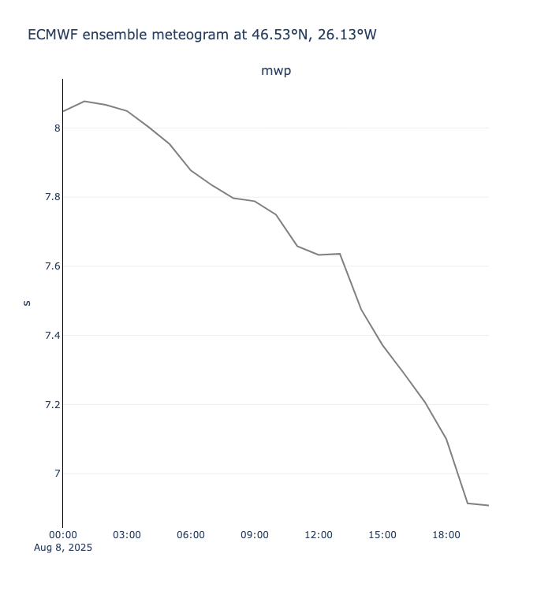

Polytope Extremes-DT Feature Extraction Timeseries example notebook#
This notebook shows how to use earthkit-data and earthkit-plots to pull destination-earth data from LUMI and plot it using earthkit-plots.
Before running the notebook you need to set up your credentials. See the main readme of this repository for different ways to do this or use the following cells to authenticate.
You will need to generate your credentials using the desp-authentication.py script.
This can be run as follows:
Show code cell source
%%capture cap
%run ../desp-authentication.py
This will generate a token that can then be used by earthkit and polytope.
Show code cell source
output_1 = cap.stdout.split('}\n')
access_token = output_1[-1][0:-1]
Requirements#
To run this notebook install the following:
pip install earthkit-data
pip install earthkit-regrid (Optional for spectral variables)
pip install cf-units (Optional for unit conversion in maps)
Show code cell source
import earthkit.data
import earthkit.regrid
from earthkit.plots.interactive import Chart
Show code cell source
# Defaults to making a live data request. Set to false to use the cached GRIB file instead.
import os
LIVE_REQUEST = os.getenv("LIVE_REQUEST", "true").lower() == "true"
LIVE_REQUEST
Show code cell source
LOCATION = ((46.52550070909342, -26.134053679694034))
request = {
"dataset": "extremes-dt",
"class": "d1",
"stream": "wave",
"type": "fc",
"date": -14,
"time": "0000",
"levtype": "sfc",
"expver": "0001",
"param": "140232",
"step": "0/to/20",
"feature" : {
"type" : "timeseries",
"points": [[LOCATION[0], LOCATION[1]]],
"time_axis": "step",
},
}
Show code cell source
data_file = "data/extremes-dt-earthkit-example-fe-wave.covjson"
if LIVE_REQUEST:
data = earthkit.data.from_source("polytope", "destination-earth", request, address="polytope.lumi.apps.dte.destination-earth.eu", stream=False)
data.to_target("file", data_file)
else:
data = earthkit.data.from_source("file", data_file)
Show code cell source
# Convert data to xarray
da = data.to_xarray()
da
<xarray.Dataset> Size: 448B
Dimensions: (latitude: 1, longitude: 1, levelist: 1, number: 1, datetime: 1,
t: 21)
Coordinates:
* latitude (latitude) float64 8B 46.52
* longitude (longitude) float64 8B 333.9
* levelist (levelist) int64 8B 0
* number (number) int64 8B 0
* datetime (datetime) <U20 80B '2025-08-08T00:00:00Z'
* t (t) datetime64[ns] 168B 2025-08-08 ... 2025-08-08T20:00:00
Data variables:
mwp (latitude, longitude, levelist, number, datetime, t) float64 168B ...
Attributes:
class: d1
dataset: extremes-dt
Forecast date: 2025-08-08T00:00:00Z
expver: 0001
levtype: sfc
stream: wave
type: fc
number: 0Show code cell source
def location_to_string(location):
"""
Converts latitude and longitude to a string representation with degrees
and N/S/E/W.
"""
(lat, lon) = location
lat_dir = "N" if lat >= 0 else "S"
lon_dir = "E" if lon >= 0 else "W"
return f"{abs(lat):.2f}°{lat_dir}, {abs(lon):.2f}°{lon_dir}"
Show code cell source
TIME_FREQUENCY = "1h"
QUANTILES = [0, 0.1, 0.25, 0.5, 0.75, 0.9, 1]
chart = Chart()
chart.title(f"ECMWF ensemble meteogram at {location_to_string(LOCATION)}")
#chart.box(ds, time_frequency=TIME_FREQUENCY, quantiles=QUANTILES)
chart.line(data, line_color='grey', time_frequency=TIME_FREQUENCY)
chart.show("png") # Replace with chart.show() in an interactive session!

Show code cell source
request2 = {
"class": "d1",
"expver": "0001",
"dataset": "extremes-dt",
"stream": "oper",
"date": "-14/to/-13",
"time": "0000",
"type": "fc",
"levtype": "sfc",
"step": "0-1/to/7-8",
"param": "169",
}
Show code cell source
data_file2 = "data/extremes-dt-earthkit-example-fe-wave2.grib"
if LIVE_REQUEST:
data2 = earthkit.data.from_source("polytope", "destination-earth", request2, address="polytope.lumi.apps.dte.destination-earth.eu", stream=False)
data2.to_target("file", data_file2)
else:
data2 = earthkit.data.from_source("file", data_file2)
Show code cell source
data2.ls()
Show code cell source
request3 = {
"activity": "ScenarioMIP",
"class": "d1",
"dataset": "climate-dt",
"date": "-14/to/-13",
"experiment": "SSP3-7.0",
"expver": "0001",
"generation": "1",
"levtype": "sfc",
"model": "IFS-NEMO",
"param": "134/165/166",
"realization": "1",
"resolution": "standard",
"stream": "clte",
"time": "0600",
"type": "fc",
}
Show code cell source
data_file3 = "data/extremes-dt-earthkit-example-fe-wave3.grib"
if LIVE_REQUEST:
data3 = earthkit.data.from_source("polytope", "destination-earth", request3, address="polytope.lumi.apps.dte.destination-earth.eu", stream=False)
data3.to_target("file", data_file3)
else:
data3 = earthkit.data.from_source("file", data_file3)
Show code cell source
data3.ls()
| centre | shortName | typeOfLevel | level | dataDate | dataTime | stepRange | dataType | number | gridType | |
|---|---|---|---|---|---|---|---|---|---|---|
| 0 | ecmf | sp | surface | 0 | 20250808 | 600 | 0 | fc | None | healpix |
| 1 | ecmf | 10u | heightAboveGround | 10 | 20250808 | 600 | 0 | fc | None | healpix |
| 2 | ecmf | 10v | heightAboveGround | 10 | 20250808 | 600 | 0 | fc | None | healpix |
| 3 | ecmf | sp | surface | 0 | 20250809 | 600 | 0 | fc | None | healpix |
| 4 | ecmf | 10u | heightAboveGround | 10 | 20250809 | 600 | 0 | fc | None | healpix |
| 5 | ecmf | 10v | heightAboveGround | 10 | 20250809 | 600 | 0 | fc | None | healpix |